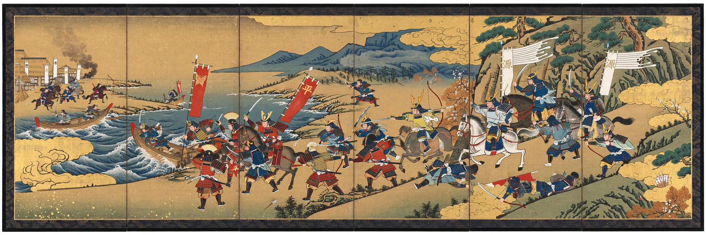

The Tale of the Heike (Japanese: 平家物語, Heike Monogatari) is an epic account of the struggle between the Taira clan (the Heike) and the Minamoto clan (the Genji) for control of Japan in the late twelfth century, culminating in the Genpei War (1180–1185) and the fall of the Taira. Compiled from oral traditions in the early thirteenth century — before 1330 — it was recited for centuries by blind monks (biwa hōshi) accompanying themselves on the biwa lute. Its opening lines are among the most famous in Japanese literature.
| The Tale of the Heike | |
|---|---|
 Scene from the Tale of the Heike | |
| Language | Japanese (wakan konkōbun mixed style) |
| Subject | Genpei War; rise and fall of the Taira clan |
| Compiled | 13th century (before 1330) |
| Form | War tale (gunki monogatari); epic chronicle in 12 books plus epilogue in the Kakuichi version |
| Famous opening | "The sound of the Gion Shōja bells echoes the impermanence of all things…" |
"The sound of the Gion Shōja bells echoes the impermanence of all things; the color of the sāla flowers reveals the truth that the prosperous must decline. The proud do not endure, they are like a dream on a spring night; the mighty fall at last, they are as dust before the wind."
The tale opens with the arrogance of Taira no Kiyomori, who raised the Taira to dominance at court and married his daughter to the Emperor, provoking resentment and plots. After Kiyomori's deathbed curse and feverish end, the Minamoto under Minamoto no Yoritomo and his brilliant half-brother Minamoto no Yoshitsune rise in rebellion. The narrative follows the Taira's flight from the capital with the child Emperor Antoku, the great battles of Fujikawa, Kurikara Pass, Ichinotani, Yashima, and finally Dan-no-ura (1185), where the Taira are annihilated and Antoku drowns in his grandmother's arms, taking the imperial sword with him. An epilogue follows the nun Kenreimon'in, Antoku's mother, in lonely retirement — the last survivor meditating on the vanity of worldly glory.
The tale is pervaded by Buddhist ideas: impermanence (mujō), karma, and the decline of the Law in the age of mappō. Heroic set pieces — the priest-warrior's defiance, the duel challenges, the deaths of Atsumori and the young Taira nobles — are framed as warnings against pride. Its sympathy famously extends to the losers: the Taira, nominal antagonists, receive the tale's deepest pathos, a sensibility later termed hōgan biiki (sympathy for the tragic hero, named for Yoshitsune's fate at his brother's hands).
The Heike circulated in many variants, both written texts for reading and performed texts for chanting. The most authoritative recension is the Kakuichi-bon, dictated in 1371 by the blind monk Akashi Kakuichi, the supreme master of the Heike recitation tradition. Blind biwa-playing monks propagated the tale throughout Japan, pacifying the spirits of the Taira dead. Episodes passed into Noh drama (by Zeami and others), kabuki, puppet theatre, and modern novels and film.
Though a work of literature shaped by oral transmission rather than a reliable chronicle, the Heike is a primary source for the medieval Japanese imagination and is conventionally read alongside the courtier diary record Azuma Kagami. Together with The Tale of Genji, it is one of the twin summits of classical Japanese narrative; complete English translations include those by Royall Tyler and Burton Watson.
From Wikipedia, the free encyclopedia (recreated from memory).